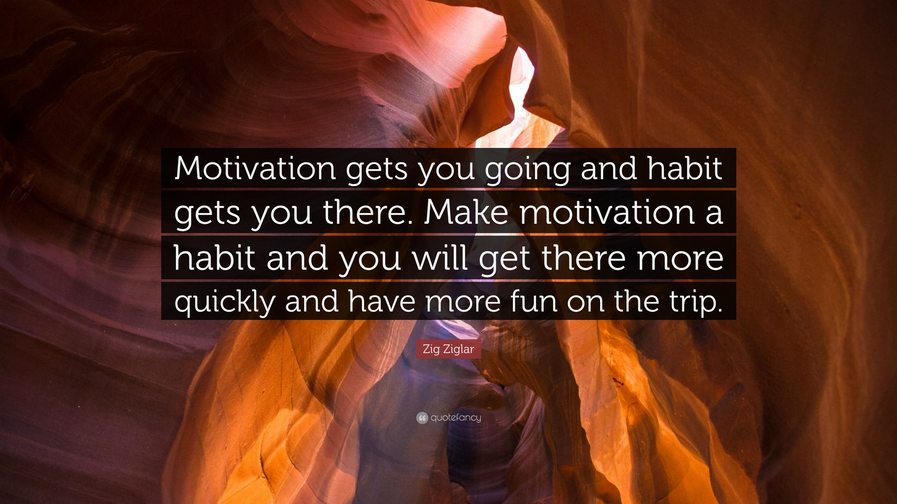

"Zig Ziglar, best motivational quotes - Motivation gets you going, and habit gets you there. Make motivation a habit, and you will get there more quickly and have more fun on the trip"
Hillary Hinton Ziglar, Born November 6th, 1926 - November 28th, 2012.
American Author, Salesman and Motivational Speaker.
He was born prematurelly in Coffe County, Alabama.
His parents were John Silas Ziglar and Lila Wescott Ziglar.
Tenth of the 12 children and the youngest boy.
In 1931 when Ziglar was five years old, his father took a management position in a Mississipi farm to Yazzo City, Mississipi, and they had to move there, where he spend most of his childhood.
Between 1943-1945 he participated at the Navy V-12-College Training Program at the University of South Carolina in Columbia, South Carolina.
Books:
Ziglar, Zig (1974). Biscuits, Fleas & Pump Handles: Zig Ziglar's Key to "More". Dallas: Crescendo Publications. ISBN 0-89038-017-1.
Ziglar, Zig (1975). See You at the Top. Gretna: Pelican Pub. Co. ISBN 0-88289-126-X.
Ziglar, Zig (1978). Confessions Of A Happy Christian. Gretna: Pelican Pub. Co. ISBN 0-88289-196-0.
Ziglar, Zig (1982). Zig Ziglar's Secrets of Closing the Sale. New York: Berkley Books. ISBN 0-425-08102-8.
Ziglar, Zig (1985). Raising Positive Kids in a Negative World. Nashville: Oliver Nelson. ISBN 0-8407-9039-2.
If you have the time you should read more about Zig Ziglar and his achievments at Wikipedia Wikipedia Entry